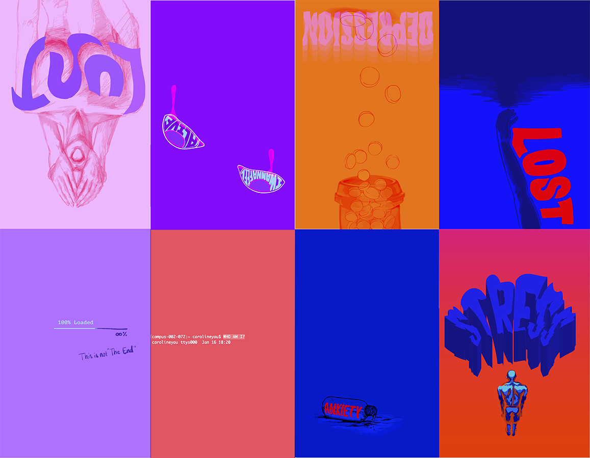

Zine
Challenge
Express my emotions of feeling numb about my future career and losing my identity, or obsession for technology and social media.
Solution
Started my zine by introducing two lines of code asking who I am. In the early versions of my zine I explored the theme of being paralyzed by computer science, but I later settled with the emotions theme. For the last page, i removed the border lines to make the whole zine more coherent. This project expresses my path of finding myself by accepting my emotions. The bright colors and strong contrast conveys what emotions mean to me, they’re strong, they influence my decisions or makes me feel lost, and they make me feel alive.
